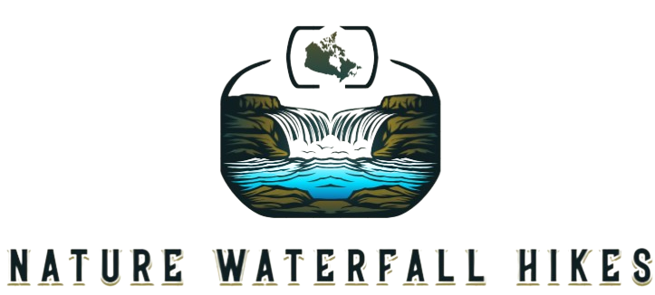

Content
Site Name
Nature Waterfall Hikes
This name goes along with my idea of hikes to beautiful waterfalls
Option Domain availability: Naturewaterfallhikes.com
Site Purpose
The site provides hikers looking for a beutiful nature hike to a waterfall a place to find a new adventure and pick their skill level.
Scenarios
Where is the hike located?
How difficult is the hike?
Color Schema
The primary colors are Forest Green (#228B22) and Sky Blue (#87CEEB). Sandy Beige (#F4A300).
Forest Green (#228B22) will be used as the main color for the header, navigation bar, and headings (h2). Sky Blue (#87CEEB) will be applied to links and accents. Sandy Beige (#F4A300) will be used for hover effects on links and buttons. The text color will be Dark Charcoal (#333333) to ensure that all content remains highly legible against the lighter background.
Typography
I will use bigshoulders and it will be applied to all headers